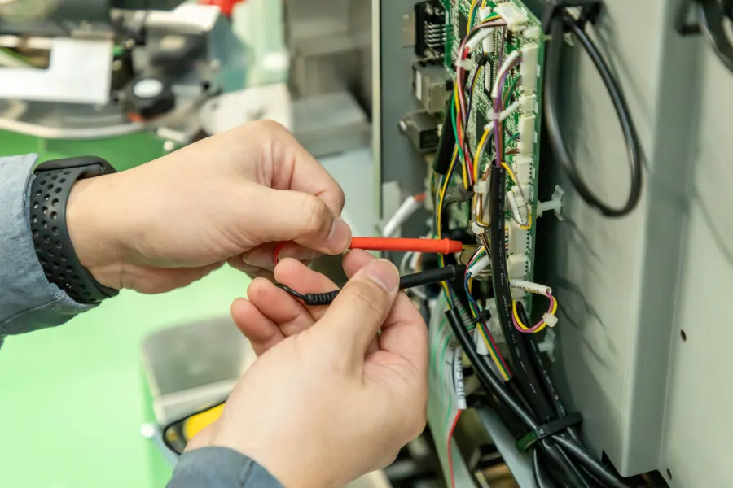
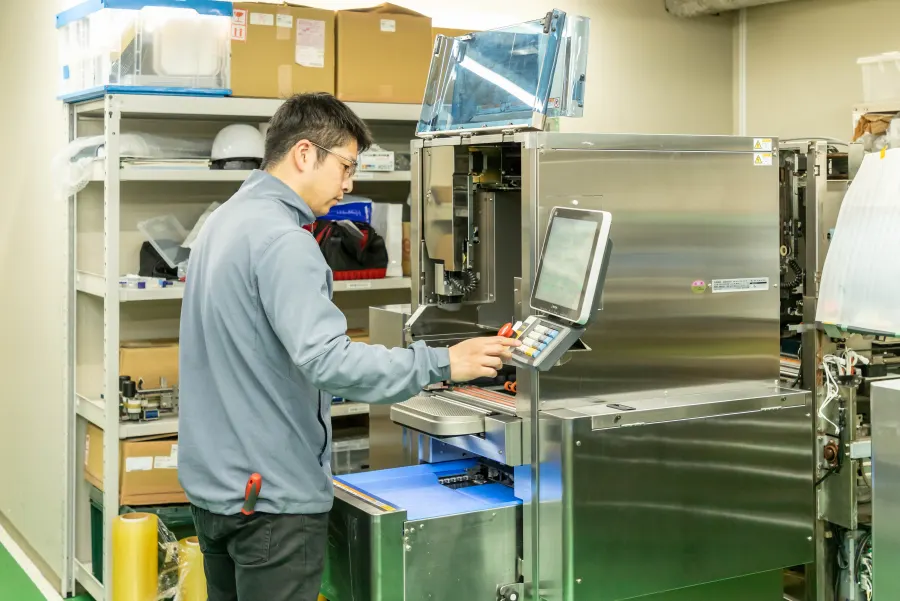

現場発のアイデア
投資企業の現場課題や顧客要望を出発点に、実需ベースのテーマを設計します。
一般社団法人テクノサプライ｜ R&D CONSORTIUM
つくるのは、未来。R&D CONSORTIUM
企業・人材・技術をつなぎ、オープンイノベーションを創造するNewsニュース
Product基本コンセプト
現場発のアイデア×共同資金出資×分散型技術リソース×成果還元型報酬設計
投資企業の現場課題や顧客要望を出発点に、実需ベースのテーマを設計します。
複数企業がプロジェクト単位で資金を拠出し、開発リスクを分散します。
投資企業のエンジニア、退職技術者、外部専門家が最適なチームを構成します。
完成した技術・製品が事業化された際、貢献度に応じて利益を還元します。
Ecosystem循環型技術創出
R&D コンソーシアムは、投資企業の「現場課題」から生まれた実践的なアイデアをもとに、プロジェクト単位でチームを編成し研究開発を行い、その成果を投資企業へ還元する循環型技術創出プラットフォームです。
開発成果は製品化やOEM供給などさまざまな形で事業化され、投資企業にとってはローリスクで活用できる「セカンドラボ」としての機能も期待されています。
Organization組織編成
複数の投資企業と複数のエンジニアが互いの価値を創造し、未来の技術や製品を開発することがR&Dコンソーシアムの目的です。
つくるのは、未来。
企業・人材・技術をつなぎ、可能性を無限に広げる、循環型 技術創出プラットフォーム。
Features事業の強み
複数の投資企業と複数のエンジニアが互いの価値を創造し、未来の技術や製品を開発する。
実需ベースの顧客課題解決型
顧客課題 → 技術開発の順序
市場仮説検証済みで、開発成功確率が向上
複数企業がプロジェクト単位で出資
リスクをシェアし大型テーマも実行
中小企業でもできる「R&Dの民主化」
常勤技術者を抱えない体制
需要連動型で固定費を極小化
柔軟性が高く、低い損益分岐点
スキルアップしながら報酬確保
就業時間外や休日を活用
開発者の副業支援制度
起案者、技術者へ利益の還元
アイデアにも技術者にも報酬
知恵が資本化され、技術者の意欲向上
革新的な技術創出インフラの構築
Engineerエンジニアメリット
就業時間外や休日を活用し、副業・業務委託として無理のない範囲で参画できます。
異業種のエンジニアや外部専門家、産学連携チームと協働し、新しい視点を得られます。
開発期間中の基本報酬に加え、事業化後は貢献度に応じた成果連動型の還元を想定しています。
Recruitエンジニア募集要項
投資企業から寄せられた実需ベースの現場課題を解決する、技術・製品の研究開発メンバーを募集しています。募集職種・応募資格・報酬の考え方をご確認のうえ、エントリーフォームからご応募ください。
Investor投資企業メリット
実需ベースの顧客課題解決型。市場仮説検証済みのテーマから開発を始められます。
複数企業がプロジェクト単位で出資し、リスクをシェアしながら大型テーマにも挑戦できます。
固定費を持たない分散型体制。ローリスクで活用できる「セカンドラボ」としても機能します。
Projectsプロジェクト事例紹介


FAQよくある質問
業種規定はありません。異業種が参画することで業界の常識を覆すイノベーションも生まれます。
コンソーシアム帰属、投資企業共有等、職務発明制度も考慮しながら契約時に厳格に定義します。
はい。但し、現在正社員雇用されているエンジニアは副業規定に抵触しないことが条件です。
はい。時給換算で給与をお支払いします。時給に関しては能力に応じて変動する場合があります。
Company財団情報
Contactお問い合わせ
エンジニア応募・投資企業相談・その他のお問い合わせを、1つのフォームで受け付けています。フォーム内のタブでお問い合わせ種別を切り替えられます。お電話（052-521-1110）でもご相談いただけます。